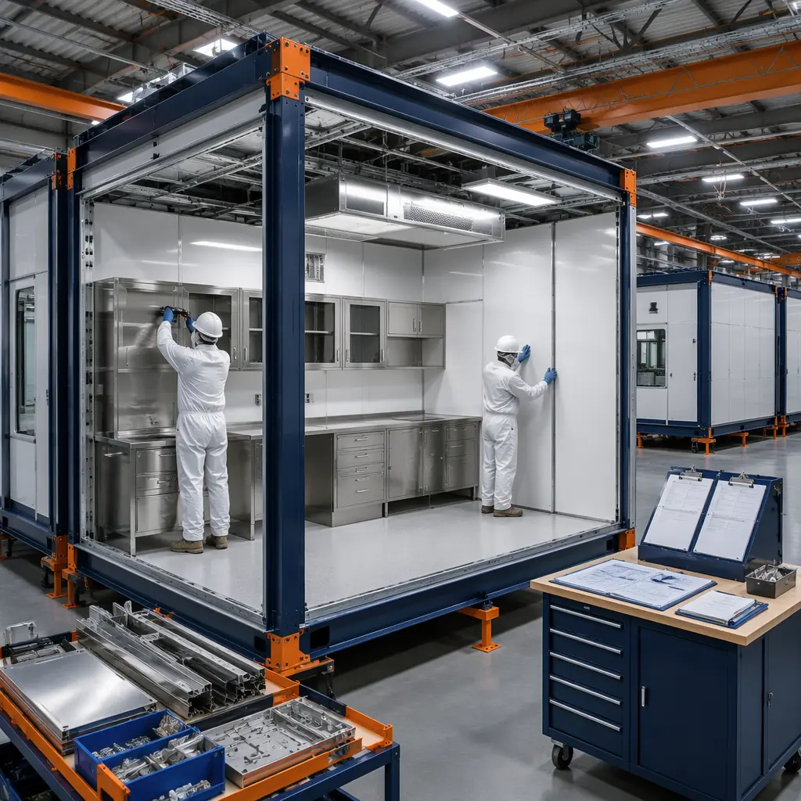
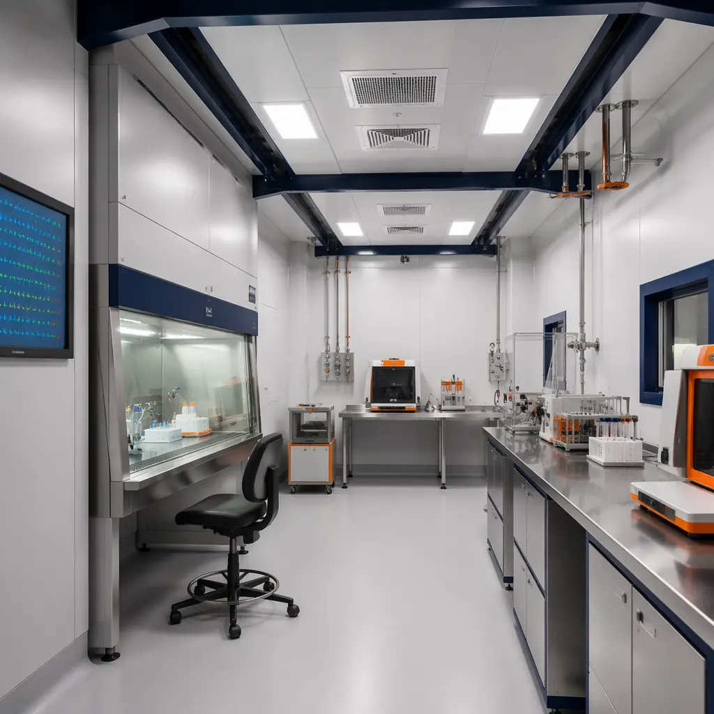
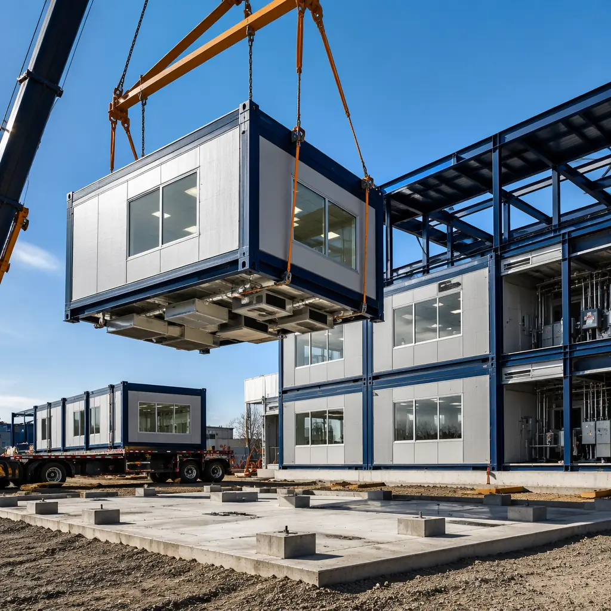

The global life sciences construction market exceeded $38 billion in 2025, with pharmaceutical R&D facilities, biotech labs, and university research buildings accounting for 62% of new laboratory construction starts according to CBRE Life Sciences Market Report. A traditional ground-up research facility — whether a 40,000 sq ft BSL-3 containment lab, a cGMP pharmaceutical production suite, or a university teaching laboratory complex — requires 24-36 months from design approval to certificate of occupancy. Every month of delay costs a pharma company approximately $1.2 million in lost time-to-market value for a single drug candidate, and every month a university research building is delayed represents a semester of grant-funded investigation that cannot proceed. Modular prefabricated construction compresses the on-site build phase from 16-24 months to 8-12 months — a 50% reduction — by manufacturing laboratory modules with pre-installed HVAC zoning, cleanroom finishes, and utility rough-in in a controlled factory environment while site foundations and utility corridors are prepared concurrently. For a biotech company constructing a $45 million research facility, compressing the schedule by 10 months translates to approximately $8 million in additional research output — the equivalent of funding 4-5 principal investigator teams for a full year.

Why Laboratory Construction Tests the Limits That Modular Construction Is Built to Exceed
Research facilities operate under performance standards that make standard commercial construction look under-engineered by comparison. These standards create structural advantages for modular delivery precisely because factory-controlled production can achieve tolerances and verification that field construction struggles to match:
- Vibration control at VC-C to VC-E levels is non-negotiable for sensitive instrumentation: Electron microscopes, mass spectrometers, confocal imaging systems, and patch-clamp electrophysiology rigs require floor vibration amplitudes below 125 micro-inches per second (VC-C) to 31 micro-inches per second (VC-E). Conventional site-built labs achieve these vibration criteria through isolated slabs with separate foundations, pneumatic isolation tables, and extensive post-construction tuning — a process that adds 8-12 weeks to the commissioning timeline. Modular laboratory construction isolates vibration at the module level: each floor module's structural frame incorporates factory-welded stiffening elements and pre-installed vibration damping pads beneath equipment zones. The module's vibration performance is verified on the factory floor before shipping — a quality control step that site-built construction cannot replicate because the testing occurs after concrete pours and structural connections are permanent. For a cryo-EM facility requiring VC-E performance, this factory-verified vibration baseline saves 6-8 weeks of post-construction tuning and eliminates the risk of discovering vibration non-compliance after the building is enclosed.
- HVAC precision at ±0.5°C and ±2% relative humidity governs experimental reproducibility: Cell culture rooms, stability chambers, and animal research facilities (vivaria) require temperature and humidity control far tighter than commercial office buildings — and the consequences of drift are not discomfort but experimental data loss. A 48-hour temperature excursion in a cell therapy production suite can invalidate a $500,000 manufacturing batch. Modular construction addresses HVAC precision by pre-integrating zone-specific air handling within each laboratory module. A BSL-2 module arrives with factory-installed HEPA-filtered supply ductwork, pressure-monitored exhaust, and automated dampers calibrated for directional airflow — the same components that would take 12-16 weeks of sequential mechanical contractor work on site. The factory also enables pressure-decay testing of each module's envelope before shipping, verifying air tightness of 0.25 CFM/sq ft at 0.3 inches water column — the standard required for negative-pressure isolation rooms under ANSI/ASHE/ASHRAE 170 for healthcare facilities, which also governs biosafety laboratory ventilation.
- Chemical resistance and surface integrity requirements exceed commercial standards by an order of magnitude: Organic synthesis labs, histology processing suites, and analytical chemistry facilities expose floors, walls, and casework to solvents (acetone, xylene, dichloromethane), acids (hydrochloric, nitric, sulfuric), and biological decontamination agents (vaporized hydrogen peroxide, chlorine dioxide). Standard commercial vinyl composition tile (VCT) fails under these conditions within 12-18 months. Modular laboratory modules are factory-finished with continuous-weld sheet vinyl flooring coved 6 inches up the wall — the same monolithic surface specification used in FDA-inspected pharmaceutical facilities under 21 CFR Part 211. The factory environment enables full-cure bonding of these surfaces under controlled temperature and humidity, eliminating the installation defects (bubbles, seam gaps, incomplete cove adhesion) that are the leading cause of chemical undercutting failure in site-applied lab flooring. This surface integrity directly reduces the lifecycle maintenance costs that research institutions track under their deferred maintenance backlog — a factor we analyzed in our comprehensive developer ROI framework, where factory-installed specialty finishes extend replacement intervals by 2-3x compared to field-applied equivalents.
- Utility density — laboratory gases, purified water, and process exhaust — creates coordination complexity that modular construction untangles: A typical wet-lab module in a chemistry research facility contains 8-12 utility services: natural gas, compressed air, vacuum, nitrogen, oxygen, carbon dioxide, reverse-osmosis/deionized water, and acid waste drainage — all requiring separate piping networks with valved drops at each laboratory bench position. Traditional construction sequences these trades over 12-18 weeks of overlapping contractor work, with the plumber, pipefitter, and HVAC controls technician each adjusting routing to avoid the previous trade's installation. Modular construction pre-installs the utility distribution backbone within each module's service chase in the factory. The piping is pressure-tested, labeled, and documented before the module ships — compressing on-site utility connection from a multi-week trade coordination exercise to a 5-day make-up and commissioning process. This same utility pre-installation approach has been validated in our deployment of modular healthcare facilities, where medical gas, nurse call, and clinical plumbing pre-installation reduced on-site MEP coordination by 70% compared to traditional construction — a model directly transferable to laboratory utility systems of equivalent complexity.

Laboratory Types Where Modular Construction Delivers Validated Performance
BSL-2 and BSL-3 Containment Laboratories
Biosafety Level 2 and 3 laboratories — the workhorse facilities for infectious disease research, clinical microbiology, and pharmaceutical quality control — require directional airflow (air moves from clean to potentially contaminated zones), HEPA-filtered exhaust, sealed penetrations, and surface finishes tolerant of chemical decontamination. A 15,000 sq ft BSL-2 suite with 8 laboratory modules, tissue culture rooms, and equipment corridors takes 14-18 months of traditional construction. Modular delivery compresses this to 8-10 months by manufacturing containment modules as sealed, pressure-tested units that arrive on site with pre-installed HEPA housings, pressure-monitoring ports, and chemical-resistant finishes.
The factory environment enables the critical commissioning step that determines BSL-3 certification: room pressure decay testing. Each containment module is pressurized to -0.05 inches water column (negative pressure relative to corridor) on the factory floor, and the pressure decay rate is measured over 30 minutes. A module that fails to maintain negative pressure — the most common cause of BSL-3 certification delays — is re-sealed at the factory, not after drywall, paint, and casework are installed. For a BSL-3 facility handling Risk Group 3 pathogens, this factory-verified containment integrity eliminates the 4-6 week post-construction rework cycle that the NIH Design Requirements Manual identifies as the leading cause of BSL-3 laboratory commissioning delays. Institutions building containment facilities can also reference our experience with modular cold storage environments, where the same factory-sealed envelope approach maintains temperature stability to ±1°C — a parallel that demonstrates how factory-built precision translates across controlled-environment building types.
cGMP Pharmaceutical Manufacturing Suites
Current Good Manufacturing Practice (cGMP) facilities operate under FDA 21 CFR Parts 210 and 211, which require documented environmental control, validated cleaning procedures, and auditable material and personnel flows. A 25,000 sq ft cGMP suite for sterile injectable production — with ISO 5 (Class 100) aseptic filling zones, ISO 7 (Class 10,000) buffer areas, and ISO 8 (Class 100,000) support spaces — represents one of the most technically demanding construction projects in the built environment. Traditional construction of a cGMP suite takes 22-30 months and costs $800-1,200 per square foot, with the cost premium driven by the sequential validation of HVAC systems, cleanroom certification, and surface finish integrity that must be completed before the FDA will approve the facility for commercial production.
Modular cGMP construction addresses this timeline by overlapping manufacturing, validation, and site preparation. Cleanroom modules are assembled and certified to ISO 14644-1 cleanliness standards at the factory — a step that shifts 8-12 weeks of on-site certification to a parallel track. Each module's HVAC system is factory-commissioned with documented airflow velocities, HEPA filter integrity tests (DOP testing), and pressure differential verification across cleanroom classifications. The factory's controlled environment also enables the surface finish validation that cGMP inspectors require: continuous-weld PVC flooring with integral cove base is installed, inspected for pinholes using high-voltage spark testing, and documented — creating the installation qualification (IQ) record that forms the basis of the facility's FDA compliance documentation. This pre-validation approach compresses the overall project timeline by 40% while strengthening the documentation package that regulatory inspectors review — a quality advantage that derives from the same factory-controlled processes that make modular construction fundamentally different from traditional methods in its approach to quality assurance and documentation.

University Research & Teaching Laboratories
Academic research buildings serve a dual mission — supporting Principal Investigator (PI)-led research programs while providing undergraduate and graduate teaching laboratories — and this dual use creates a construction scheduling challenge that modular delivery is uniquely positioned to solve. A 60,000 sq ft university science building housing chemistry teaching labs on the ground floor, biology research suites on the second, and physics instrumentation labs on the third requires 28-34 months of traditional construction — a timeline that often forces universities to begin construction after spring commencement and race to complete before the following fall semester 16 months later, inevitably missing one academic year of occupancy.
Modular laboratory construction compresses this to 14-18 months by manufacturing teaching lab modules — with pre-installed student bench services (gas, water, vacuum, power, data), instructor demonstration stations, and chemical fume hood rough-in — concurrent with foundation work. The compressed timeline means a university that breaks ground in May can occupy the building by the following fall semester — recovering an entire academic year that traditional construction would lose. The factory environment also resolves a specific problem that plagues university projects: the need to install 200+ laboratory bench service connections with zero leaks, since a single gas leak in a teaching laboratory with 24 active gas valves creates a building-wide shutdown. Modular construction pressure-tests every service drop at the factory — 200 bench connections verified before they leave the production line — eliminating the 3-4 week on-site commissioning process that is the most stressful phase of any university lab project. This same production-line repeatability created the cost efficiencies we documented in our K-12 modular school construction analysis, where factory-built classroom modules achieved 92% first-pass quality acceptance versus 73% for traditional site-built schools.
Cleanroom and Controlled Environment Modules
Beyond BSL and cGMP facilities, modular construction serves a wide spectrum of controlled environments: semiconductor metrology labs requiring ISO 4 (Class 10) cleanliness, optics and photonics labs needing Class 10,000 with amber lighting, and metrology labs with temperature stability of ±0.1°C. These ultra-precise environments represent the extreme end of the construction quality spectrum, where a single dust particle, a 0.05°C temperature fluctuation, or a 2-micro-inch vibration event can invalidate measurement data.
Modular cleanroom construction addresses these extremes by creating each controlled environment as a self-contained module — essentially a cleanroom-within-a-building — where the ISO-classified envelope, HEPA/ULPA filtration, temperature control, and vibration isolation are factory-integrated and factory-certified. A photonics lab module ships with amber-filtered lighting pre-installed, black-out window treatments integrated into the wall assembly, and optical table anchor points embedded in the structural floor — eliminating 6-8 weeks of on-site specialty contractor work. For semiconductor R&D facilities, the factory environment provides the ultra-low particulate conditions needed to commission an ISO 4 cleanroom — conditions that are extremely difficult to achieve on an active construction site where drywall dust, concrete grinding, and trade traffic continuously re-contaminate cleaned spaces. The cleanroom module concept also integrates naturally with the energy performance framework we explored in our examination of modular building energy efficiency, since a factory-built cleanroom's documented envelope integrity directly reduces the HVAC energy load — often 60-70% of a cleanroom's total energy consumption — by eliminating the air leakage that field-constructed cleanrooms typically experience at panel joints and service penetrations.

Cost Comparison: Modular vs. Traditional for Research Facilities
Life sciences facility economics must account for the full cost of delay — lost research output, regulatory approval postponement, and grant-funding windows — in addition to hard construction costs:
| Cost Category | Traditional | Modular | Research Organization Impact |
|---|---|---|---|
| Hard construction ($/sq ft, BSL-2 lab) | $550-750 | $560-740 | +2-5% hard cost, offset by 40-50% schedule savings |
| Hard construction ($/sq ft, cGMP suite) | $800-1,200 | $820-1,180 | Narrow premium, factory validation reduces commissioning by 40% |
| Time-to-occupancy (40,000 sq ft lab) | 24-30 months | 13-16 months | 10-14 months earlier research output — ~$6-10M value for pharma |
| Commissioning/validation timeline | 12-16 weeks sequential on site | 4-6 weeks connection + verification | 8-10 weeks recovered, factory IQ/OQ documentation reduces FDA review time |
| Change order rate (% of contract) | 8-14% | 2-5% | $480K-720K avoided on $8M contract; utility coordination the largest savings driver |
| Lifecycle — deferred maintenance | $18-25/sq ft/year (labs average 2.5x commercial) | $13-18/sq ft/year | Factory-documented systems baseline enables predictive maintenance vs. reactive |
| Grant funding risk | 24-30 months of schedule exposure | 13-16 months of schedule exposure | NIH/NSF grants with 18-month construction windows become feasible |
The economic case for modular laboratory construction strengthens at the portfolio level. A pharmaceutical company planning 3 facilities — a discovery lab, a process development suite, and a QC laboratory — faces a traditional timeline where the lessons learned from facility 1 arrive after facility 3 is already in design. Modular construction's factory repeatability means that the process improvements from module 1 — utility routing optimizations, surface finish specifications, HVAC balancing parameters — are incorporated into modules 2 through 40 on the same production line. This compounding benefit is the factory-equivalent of the research productivity gains that modular construction financing models capture through accelerated asset delivery — the same financial dynamic that makes modular construction compelling for private development, applied to the even more time-sensitive economics of pharmaceutical R&D.
Regulatory and Validation: How Modular Construction Strengthens the Compliance Package
Research facilities operate under the most demanding regulatory framework in the construction industry — FDA 21 CFR Part 211 for pharmaceutical manufacturing, NIH Guidelines for Research Involving Recombinant DNA, USDA APHIS standards for biocontainment, and AAALAC International accreditation for animal research facilities. Each of these frameworks requires documented evidence that the built environment meets performance specifications — and modular construction generates that documentation as a byproduct of its production process.
Factory-built modules produce a chain of documentation that traditional construction must assemble retroactively: material certifications for every surface, weld inspection records for stainless steel utility piping, pressure-decay test results for containment envelopes, HEPA filter integrity certificates, and installation qualification (IQ) photographs showing equipment placement relative to cleanroom airflows. This documentation exists because the factory's ISO 9001 quality management system requires it — the same ISO framework that pharmaceutical companies already trust for their own manufacturing operations. For a cGMP facility preparing for an FDA pre-approval inspection, a modular construction documentation package typically reduces the facility-related portion of the inspection by 30-40% compared to a traditional construction documentation package, because the evidence chain from factory floor to final installation is complete and auditable. This documentation and validation framework aligns with the sustainability documentation advantages we identified in our analysis of LEED certification for modular construction, where factory-controlled processes similarly streamline the evidence requirements for green building credits.
Is Modular Right for Your Research Facility?
Modular construction delivers the strongest value for life sciences projects with these characteristics:
- Facility size 10,000-80,000 sq ft: The range where module count (12-45) achieves factory production-line efficiency and the utility pre-installation savings are most significant relative to the project's total MEP budget
- Standardized laboratory typologies: Wet labs, tissue culture suites, BSL-2/BSL-3 containment, cGMP cleanrooms, and instrument rooms — the functional building blocks of life sciences — are inherently modular in their spatial and service requirements, making them ideal candidates for factory production
- Multi-building research campus programs: When an institution is planning 3+ buildings — the factory learning curve reduces per-square-foot cost by 8-12% from the first building to the fifth, a compounding efficiency that also improves quality consistency across the campus
- Active-campus or occupied-adjacent sites: When the new facility must be built adjacent to operating laboratories, vivaria, or clinical spaces where dust, vibration, and construction traffic can disrupt sensitive experiments — modular's compressed on-site activity reduces disruption duration by 60-70%
- Accelerated funding windows: NIH Center Core Grants, NSF Major Research Instrumentation awards, and venture-funded biotech build-outs that must demonstrate facility readiness within 12-18 months — timelines where traditional construction cannot deliver and modular can
For one-off signature laboratory buildings — architectural statements with custom atria, complex non-rectilinear geometries, or 100,000+ sq ft continuous floor plates — traditional construction remains the appropriate delivery method. But for the 75% of life sciences building stock that consists of functional laboratory modules, support spaces, and controlled environments — the workhorse facilities where the science actually happens — modular construction delivers the combination of validated performance, schedule compression, and regulatory documentation that research organizations depend on. The institutions that build faster are the ones that discover sooner.
MODURA brings 500+ completed modular projects across 18 countries and 4 ISO 9001/14001 certified factories to every life sciences engagement. Our team includes specialists with laboratory and healthcare construction experience who understand the BSL, cGMP, and cleanroom standards that govern research facility design. Whether you're planning a single BSL-3 suite or a multi-building research campus, contact our life sciences team for a free feasibility assessment including vibration criteria analysis, HVAC zoning strategy, and a modular delivery timeline matched to your grant-funding cycle and research program milestones.